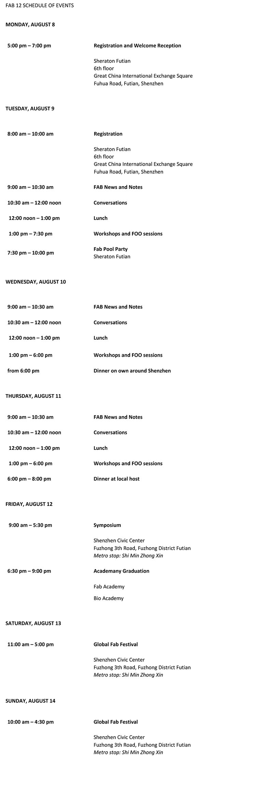

Fab 12 Conference @ Shenzhen
I have the privilege of attending Fab 12 together with 6 other colleagues from Singapore Polytechnic. This conference was held on 8-14 Aug 2016, in Shenzhen, China. It was also at this conference that I received my Fab Academy graduation certificate from Professor Neil Gershenfeld, the Founder of Fab Academy, and Director of the Center for Bits and Atoms, Massachusetts Institute of Technology.
Schedule of Events

Photo Gallery & Highlights

Impact & Learning Points
This conference really opened my eyes to the makers community all over the world. More than 500 participants, over 60 different countries came together to share knowledge and find ways to impact their own community with fab technology and innovations. I do not know how we can move forward from here, but definitely we can contribute in small ways in building projects, and to create awareness in the Polytechnic. I see in many countries, the government bodies are the ones spearheading, promoting and funding the fab labs and maker movement. There is much collaborations with businesses, community, humanitarian and education sectors. It makes me want to contribute to influence my circle. Nevermind if baby-steps, at least it's moving somewhere, somehow.
One action plan I could think of is to first set up a website on github platform to document whatever projects I would have the opportunity to lay my hands on, moving forward. Hopefully, these projects would inspire more people to come on board and making something we need, instead of buying it, which is what we are so fond of doing.
References